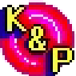
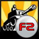
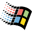
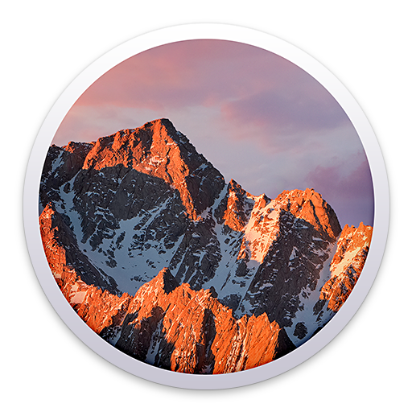

Exporters
Exporters Extensions
Extensions Interface
Interface Chowdren
Chowdren ClickStore
ClickStore Bug Tracker
Bug Tracker| |
This is an archive. |
| See the new ClickWiki at https://clickwiki.net. This version is just an archive for the purposes of migrating content to the new structure. |
Help:Welcome
Welcome aboard!
We are pleased you'd like to contribute to the Wiki. The sections on this page will advise you on some tips as well as provide our own help documentation if you are new to contributing to Wikis altogether.
| |
Need help with something? |
| Have a question not covered on this page? Click here. |
Jump to...
- Account Registration
- MediaWiki Syntax
- Special Templates Reference
- Special Icons Reference
- Summary and Page Watching
- Taking care of the Wiki
- Final Points
Registering for an account
You can log in at any time by clicking the Login link at the bottom of any page. However, our user system is not integrated with the Community Forums and hence, you will need to register for an account for the first time. We recommend using your forums' account name for consistency and familiarity.
While the MediaWiki software will never store your password in plain text, it is recommended for security reasons to use a different password for your Wiki account as you should with different services.
Once you have a Wiki account, you're ready to start contributing!
Editing pages
For editing a specific section, click on the [Edit] link or the button at the top of the page for full page edits. If you are new to Wiki's in general, you'll soon become familiar with the syntax system, particularly if you're use to a WYSIWYG interface (What You See Is What You Get). The Wiki also implements its own designs and features, as explained on this page.
Detail preferred.
When creating a new page, please enter as much detail as you can straight away. This way, we can avoid infuriating a visitor if they were expecting to read details about that specific topic. No placeholder pages please, as they make it harder to spot what needs writing, is less efficient for you, and bloats the database and RSS feeds unnecessarily.
Take another moment to proof read.
Nobody's perfect, but please do take another moment to proof read sentences and check for obvious spell or grammars errors to ensure your contributions are of high quality. As the previous paragraph briefly mentioned, editing multiple times at once only bloats the database and clutters RSS feeds with the tiniest of mistakes.
MediaWiki Syntax
The syntax is like a standard unformatted text document, except includes certain characters set out in a way that changes the look of the page. There is a lot of official documentation a search away on the web if you would like to study the syntax into detail. However, this page will list the basics that you'll most often use.
| Type | Code | Preview | Description |
|---|---|---|---|
| Text |
This is a sample sentence |
This is a sample sentence | Quite simply displays text as-is on the page. |
| New line |
Text 1 Text 2 |
Text 1 Text 2 | New lines require a space between two lines. Without this, the text will stay on the same line. |
Line 1 Line 3 |
Line 1
| ||
| Headers |
== Heading 2 == |
Heading 2 Heading 3 Heading 4 Heading 5 |
Creates different headings to your page, as well as adding them to the Table of Contents. |
| Bold text |
'''Probably important to note.''' |
Probably important to note | 3 hyphens around text will bold text. |
| Italic text |
''I'm the sidekick text.'' |
I'm the sidekick text. | 2 hyphens around text will make it italic. |
| Bulleted list |
Items: |
Items:
|
An asterisk will create a bullet list of items.
|
| Numbered list |
Items: |
Items:
|
A hash tag will create a numbered list of items.
|
| Table of Contents |
__TOC__ |
Displays the table of contents of a page. This goes after an introduction paragraph. | |
| Link to another Wiki page |
[[Multimedia Fusion 2]] |
Multimedia Fusion 2 | Creates a link to another page with this name of the Wiki. It's important to check the spelling. Red links indicate the page doesn't exist yet, again please check the spelling in case of a typo.
[[Multimedia Fusion 2 | MMF2]] Becomes MMF2 while still linking to the same page. |
| Link to an external page |
[http://www.clickteam.com Clickteam] |
Clickteam | Creates an external page. You can also give the page a name after leaving a space. |
| Embed an image |
[[File:Icon MMF2.png]] |

|
Embeds an image. The first one is very simple and shouldn't be considered. The second example improves the presentation as the user can specify the size (in pixels), a caption (when the mouse is over) and specify a link.
link= If the image does not appear and does not exist, you can click on it from the preview or live page to upload it. If using existing images, be sure to check spelling or how it's phrased to avoid unnecessary duplicate images. |
| Superscript |
5<sup>th</sup> of April |
5th of April | Makes a string of text smaller towards the top line. |
| Subscript |
January 2015 <sub>(1 month ago)</sub> |
January 2015 (1 month ago) | Makes a string of text smaller towards the bottom line. |
| Simple Table |
{| class="wikitable"
|
|
To start the table, type:
{|
To give the table borders, also type: class="wikitable" For header cells, start a new line with an exclamation mark, plus the contents: ! Header 1 For new cells, start a new line with an exclamation mark, plus the contents: | Something inside the cell. To start working on a new row, type a pipe character followed by a hyphen: |- You can also specify optional syntax, followed by a pipe character with the cell's actual contents. To merge a number of rows: | rowspan="2" | Cell 3 To merge a number of columns: | colspan="2" | Cell 3 Finally, to close the table: |} |
| Code Block |
_C:\> RUN\DOS\RUN |
C:\> RUN\DOS\RUN |
Add two extra spaces at the start of the line for a code block. This is useful for demonstrating actual code or command lines. |
Using Templates
There are also elements that greatly enhances the presentation of the Wiki called templates. These automatically add additional syntax to the page you are editing and brings benefits such as a consistent look across the Wiki.
Templates can be used by calling the name, for example:
{{Yes}}
Some templates may also make use of parameters using the pipe ("|") character. They could be arranged in one of two ways:
{{Partial | Limited}}
-- or --
{{InfoBox
| Author = Clickteam
| Status = Released
}}
Here is a list of the templates you can use:
- Summary Tables - Displayed on the right
- {{InfoExtension}} - Brief overview of an extension/object.
- {{InfoProduct}} - Facts about a product.
- {{InfoExporter}} - Facts about an exporter.
- {{InfoService}} - Brief overview of a service.
- {{InfoEvent}} - Brief overview of an event, occasion or gathering.
- Alerts
- {{InfoBox}} - Display important information about a particular page or section.
- Table Cells
- {{Yes}} - Turns a table cell green. Optional text can be specified. Default "Yes".
- {{Partial}} - Turns a table cell yellow. Optional text can be specified. Default "Partial".
- {{No}} - Turns a table cell red. Optional text can be specified. Default "No".
- {{Unknown}} - Turns a table cell grey. Optional text can be specified. Default "?".
- Formatting
- {{Quote}} - To display a quote box when referring another source.
Visual Looks
- Event Editor - To build an event editor view for demonstrating conditions and actions.
- Event List - An alternate method to build a more detailed event list for conditions and actions.
Special Icons Reference
These are primarily used for tables and summary boxes. Instead of writing "Windows", considering typing {{Windows}} which will display the icon  instead.
instead.
| Products | |
|---|---|
|  | {{K&P}} |
| {{C&C}} | |
| |
{{TGF1}} {{TGF}} |
| |
{{MMF1.5}} {{MMF1}} {{MMF}} |
| {{TGF2}} | |
|  | {{TGF2Newgrounds}} |
| |
{{MMF2Demo}} |
| |
{{MMF2}} |
| |
{{MMF2Dev}} |
| |
{{CF2.5Free}} |
| |
{{CF2.5}} |
| |
{{CF2.5Dev}} |
| Exporters | |
| |
{{EXE}} |
| |
{{MacApp}} |
| |
{{Flash}} |
| |
{{iOS}} |
| |
{{Android}} |
| |
{{HTML5}} |
| |
{{XNA}} |
| {{Java}} | |
| |
{{Vitalize}} |
| |
{{FusionUWP}} |
| Platforms | |
| |
{{Windows}} |
|  | {{Windows9x}} |
|  | {{Mac}} |
| {{Linux}} | |
| |
{{Steam}} |
| {{WinPhone}} | |
| {{WinXNA}} | |
| |
{{Xbox360}} |
| |
{{XboxOne}} |
| |
{{UWP}} |
| Chowdren | |
| {{WinChowdren}} | |
| {{MacChowdren}} | |
| |
{{LinuxChowdren}} |
| {{PS4}} | |
| {{PSVita}} | |
| {{WiiU}} | |
| {{3DS}} | |
| Distribution | |
| |
{{ShopSteam | http://url_goes_here }} |
| |
{{ShopStandAlone}} |
| Extension Attributes | ||
|---|---|---|
| These are placed before the description text on the Extensions page. | ||
| {{DevOnly}} | Only available in Developer. | |
| {{HWAOptimised}} | Optimised for Hardware Acceleration. | |
| {{HWANotSupported}} | Incompatible when used in Hardware Acceleration. | |
| |
{{ClickteamExtension}} | Created/maintained by Clickteam. |
| {{LegacyExtension}} | An old extension recommended to use for legacy applications (for instance, created for MMF1). | |
| Extension Sources | |||
|---|---|---|---|
| These are in their respective columns on the Extensions page. | |||
| Information | |
{{ExtPage | url_goes_here }} | Extension's corresponding thread or web page. |
| Download | {{ExtDownload | url_goes_here }} | ZIP links preferred, or a page (ie. a web folder) containing working links. | |
| |
{{ExtPurchase | url_goes_here }} | Extension can be obtained or purchased from the ClickStore. | |
| |
{{ExtManager | url_goes_here }} | Extension can be downloaded via Fusion 2.5's Extension Manager. | |
{kind=link}
Summary and Page Watching
To help identify your changes, at the end of every edit (even the tiniest ones), type what you did. For instance, if it was for fixing spelling errors, you could put "Typo", or if it's a new page you started but you'll work on it later, type something like "Started new page, work in progress".
You also have a personal watch list should you wish to track changes made to a page (particularly useful if you are the developer of a third party service and would like to keep it accurate) Your watch list can be accessed from the user menu (on the top-right)
Talk page - Suggestions and discussions
Should you wish to raise questions or post a suggestion for consideration, you can do so on page's talk page. This can be reached by clicking "Page" in the top-left and selecting "Discussion".
The behaviour is the same as editing any other page. Please be considerable to other user's talk unless deletion is necessary (such as being out of date).
To track conversations, it is important to sign off with:
--~~~~
This is replaced with your signature upon saving, which by default is your username and timestamp.
Uploading images
You can click the link of any image place holder that does not yet its image. Alternatively, if you wish to upload manually or beforehand, visit Special:Upload.
Consider the format of the image. PNG is best suited for small graphics and transparency, whilst JPEG is usually ideal for larger images, like screenshots.
Express Tip
When you create new pages, there is no need to write them from scratch. In other words, for most pages, copy and pasting will save you typing unnecessary keystrokes.
Product pages: Multimedia Fusion 2
Exporter Pages: Windows Runtime
Extension Pages: String
Looking after the Wiki
Wiki's can be complex, but they don't have to be.
Be frugal when saving edits
Each time you save, extra information is added alongside to the Wiki's database for its features (like Recent Changes and the RSS Feed). While there is capacity for the database to grow, there are long term disadvantages like any database if it becomes bloated. Maintenance will be routinely carried out to compact this.
To prevent unnecessary overhead, please avoid saving your changes one by one, but instead save them all at once if you intend to edit the same page again a little while later. Clicking "Edit" at the top is preferred than individual [Edit] boxes should you wish to edit multiple sections of the same page.
Avoid unnecessary redirects
Arguably to avoid too many redirects, you could write your links to use the full title, but display something different on the link.
For example:
[[Multimedia Fusion 1.5#Version_1.0|The original Multimedia Fusion]]
Becomes The original Multimedia Fusion.
Most of the redirects in place are for common abbreviations (eg. MMF, K&P, Fused!, IC, etc) or for similar titles (eg. Fused, Fused! for Fused E-Magazine) or when pages have been re-organised, and we don't want to break those links.
JPG vs PNG
To help reduce bandwidth, choose whether JPEG or a PNG file is smaller, and upload that one. Do take care when naming the file name's extension. Generally, PNG's are an excellent choice for small icons and transparency, and JPEG for screenshots and larger images.
Caching
You may notice that uploading a newer image succeeds (which it does) but thumbnails do not reflect this. Don't worry, this is part of the caching performed by the MediaWiki software. To force a refresh of any page, add the following to the end of the URL:
?action=purge
And finally...
Thank you for taking the time to help us build the Wiki.. Together, let's build a fantastic place to discover knowledge around Fusion, the community and of course, Clickteam and their products.
- Help:Todos contains a list of to-do's for planned pages.
- About ClickWiki outlines our overall goal.